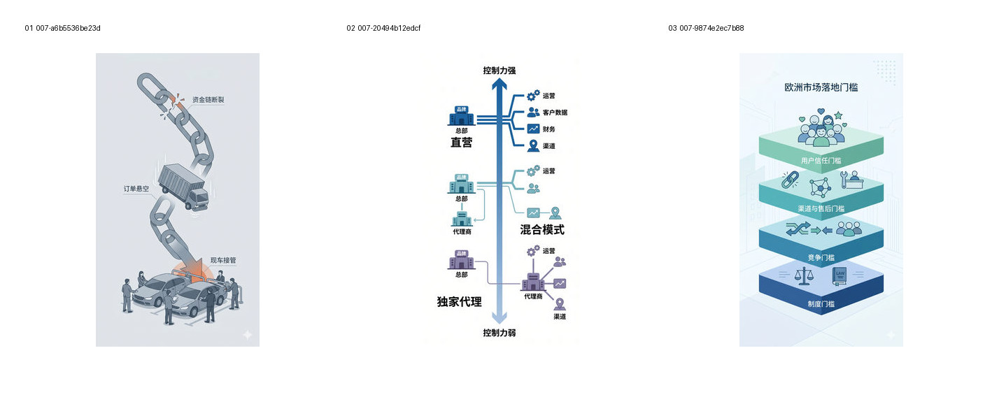
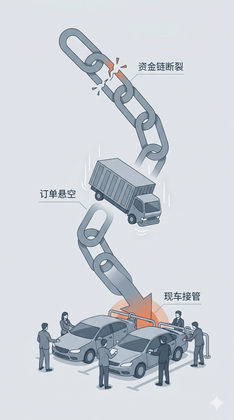
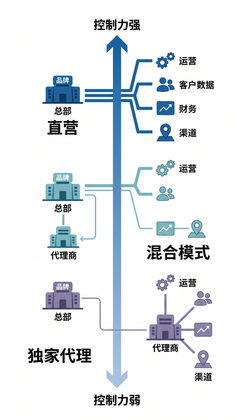

针对三张问题样本减轻文字和重信息图感，并观察系列一致性问题。
Evidence: references/text2pic/conversations/007-Branch-1-V1视觉系统设计/IMAGE_MANIFEST.md § 3. 第二组：三张问题样本定向修正（3 张）


d9b687562688253b…

7e1321ed43a94fd6…
c0b1cdac753bf130…